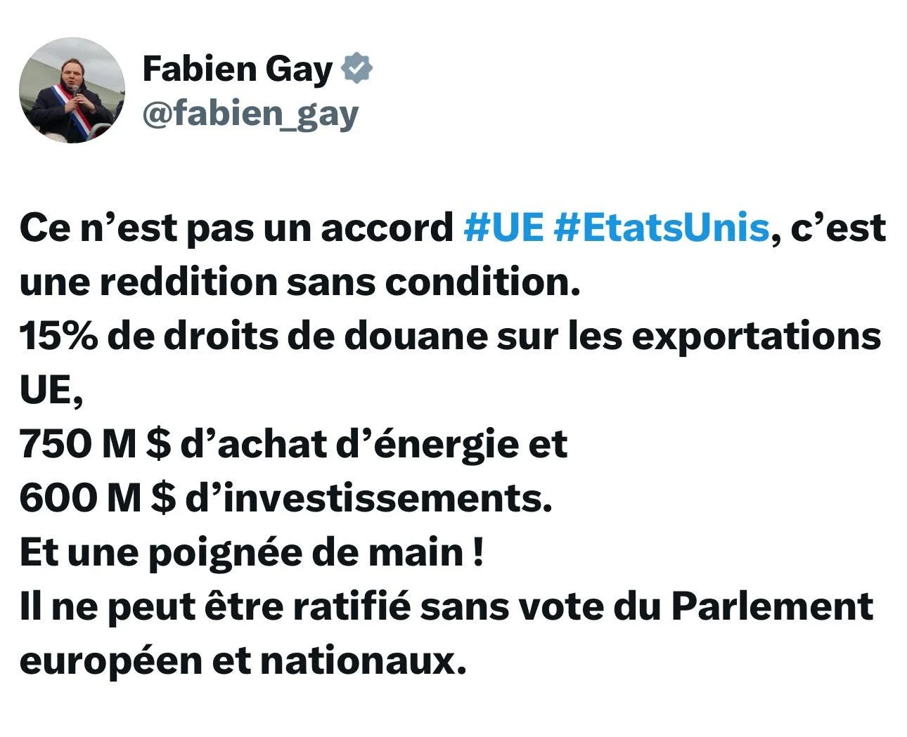

Publication relayée par le PCF 79
Fabien Gay critique l’accord commercial entre l’Union européenne et les États-Unis
Date de mise à jour indiquée par Facebook · 28 juillet 2025
Texte de la publication · Fabien Gay
Un accord défavorable pour nos emplois et le climat
Repères éditoriaux
Dans le visuel joint, Fabien Gay critique notamment les droits de douane annoncés et demande un vote des Parlements sur la ratification de l’accord.

Sources
Fabien Gay · publication relayée par le PCF 79 · bibliothèque Facebook · AR-0002-FB-01054
À lire aussi · Le PCF critique l’accord commercial entre l’Union européenne et les États-Unis